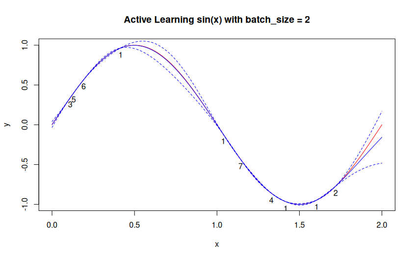

Computer Experiment LEarning Curve eXtrapolation
Tools for active learning on computer experiments, with support for learning curve extrapolation and progress forecasting.
Installation
# you almost certainly need:
install.packages(c("mlr3learners", "DiceKriging"))
# Install celecx
remotes::install_github("mlr-org/celecx")Example
Run active learning to explore an unknown function:
library("celecx")
library("mlr3")
library("mlr3learners") # for regr.km
# Define objective (unknown function to learn)
objective <- ObjectiveRFun$new(
fun = function(xs) list(y = sin(xs$x * pi)),
domain = ps(x = p_dbl(lower = 0, upper = 2)),
codomain = ps(y = p_dbl(tags = "learn"))
)
# Run active learning
result <- optimize_active(
objective = objective,
term_evals = 10L,
learner = lrn("regr.km", covtype = "matern5_2"),
se_method = "auto",
batch_size = 2L,
aqf_evals = 20L,
multipoint_method = "greedy"
)
# Access results
result$instance$archive$data # All evaluated points
xvals <- seq(0, 2, length.out = 100)
yvals.true <- objective$fun(list(x = xvals))$y
yvals.pred <- result$optimizer$surrogate$predict(data.table::data.table(x = xvals))
plot(xvals, yvals.true, col = "red", type = "l", xlab = "x", ylab = "y",
main = "Active Learning sin(x) with batch_size = 2")
lines(xvals, yvals.pred$mean, col = "blue")
lines(xvals, with(yvals.pred, mean + 1.96 * se), col = "blue", lty = 2)
lines(xvals, with(yvals.pred, mean - 1.96 * se), col = "blue", lty = 2)
text(y ~ x, labels = batch_nr, data = result$instance$archive$data, pos = 1)

Active Learning sin(x) with batch_size = 2